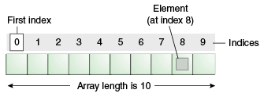

Arrays
Un array es una estructura de datos de tamaño fijo y multi-dimensional que permite almacenar y acceder a una colección de valores del mismo tipo. Son útiles para organizar y manipular grandes cantidades de datos de manera eficiente. En muchos lenguajes de programación, se representan como una secuencia ordenada de casillas de memoria que pueden almacenar valores de cierto tipo. Cada elemento del array tiene un índice único asociado con el valor que almacena, y los valores se pueden acceder y modificar a través de esos índices. En un array de enteros llamado "numbers", se podría acceder al valor almacenado en la casilla con índice 8 de la siguiente manera: "numbers".
Se describen como "objetos similares a listas"; son objetos simples que contienen múltiples valores almacenados en una lista. Los objetos de arreglo se pueden almacenar en variables y manejarse de la misma manera que cualquier otro tipo de valor, la diferencia es que podemos acceder a cada valor dentro de la lista de manera individual y hacer cosas muy útiles y eficientes con la lista, como recorrerla y hacer lo mismo con cada valor.
Tal vez tengamos una serie de productos y sus precios almacenados en un arreglo y queramos recorrerlos todos y imprimirlos en una factura, mientras sumamos todos los precios juntos y imprimimos el precio total al final. Si no tuviéramos arreglos, tendríamos que almacenar cada elemento en una variable separada, luego llamar al código que hace la impresión y la adición por separado para cada elemento. Esto sería mucho más largo de escribir, menos eficiente y más propenso a errores. Si tuviéramos 10 elementos que agregar a la factura ya sería molesto, ¿pero qué pasa con 100 elementos o 1000?
Creación de arrays
Para crear un objeto array en JavaScript, se puede utilizar la notación de corchetes y elementos separados por comas o el constructor Array.
const shopping = ['pan', 'leche', 'queso', 'fideos'];
console.log(shopping);
La declaración const shopping crea una variable llamada shopping y le asigna un array con cuatro elementos: 'pan', 'leche', 'queso', 'fideos'. Luego, la línea console.log(shopping) imprime el array en la consola. El resultado es: ['pan', 'leche', 'queso', 'fideos'].